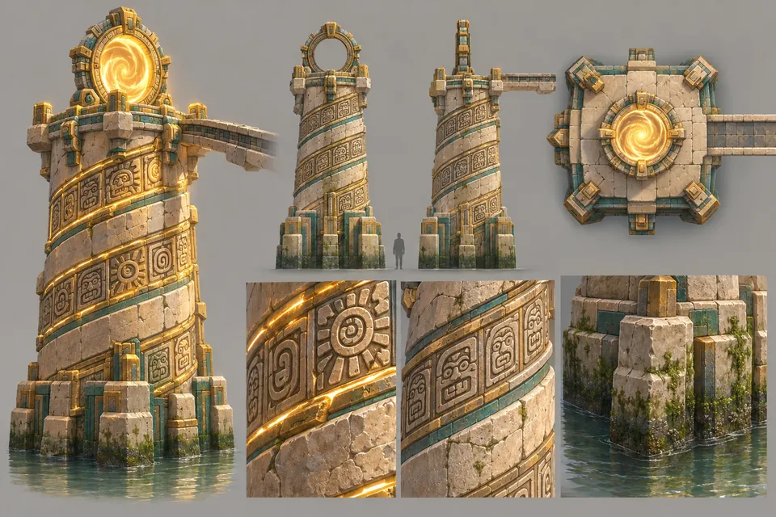
F0-01
Der Aufstieg
Die erste Ebene und der Vertical Slice: siebzehn Bildschirme von der Seite, jede Grundbewegung einmal gelehrt, und dein erster Tod.
The Shell ist die erste Ebene und der Vertical Slice: die halbe Stunde, die das ganze Spiel beweisen muss. Sie wird von der Seite gespielt, in zwei Reihen von Bildschirmen.
Die untere Reihe läuft nach rechts, vom gefluteten Atrium durch den Stachelgang, die Feuergalerie und die Schlucht. Ein Schacht steigt auf. Die obere Reihe läuft zurück nach links, zu einer Brücke hoch über dem Atrium und dem Portal auf der Spitze der Sonnensäule, das von der ersten Sekunde an über dir leuchtete. Sie lehrt jede Grundbewegung einmal, zeigt dir zwei Schlösser, die du noch nicht öffnen kannst, und tötet dich einmal, mit Absicht, damit das Erste, was du wirklich lernst, die Rückkehr ist.
Jeder Bildschirm ist ein Bild der Spielkamera, 30,72 mal 17,28 Meter Tempel, in der Reihenfolge, in der du sie spielst. Die ersten vier liegen draußen: das Lager, der Pfad und der Schlangentunnel hinab zur Schwelle.
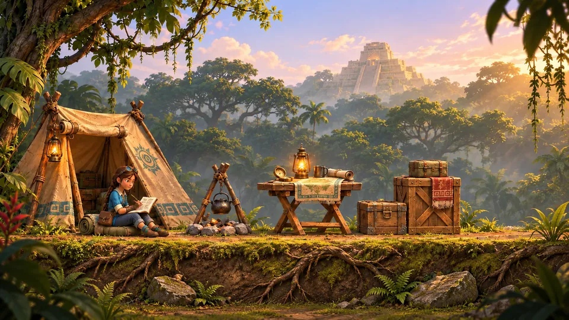
01Das Lager im Morgengrauen
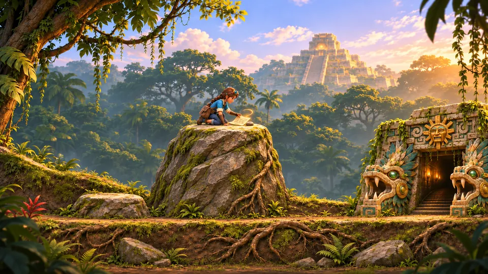
02Der Pfad
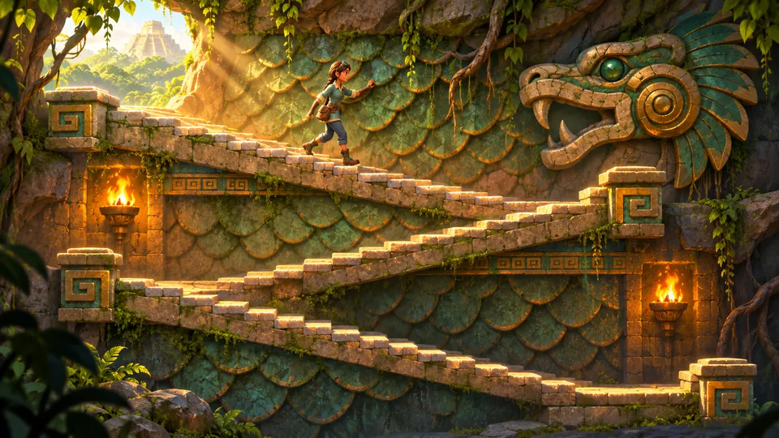
03Der Schlangentunnel
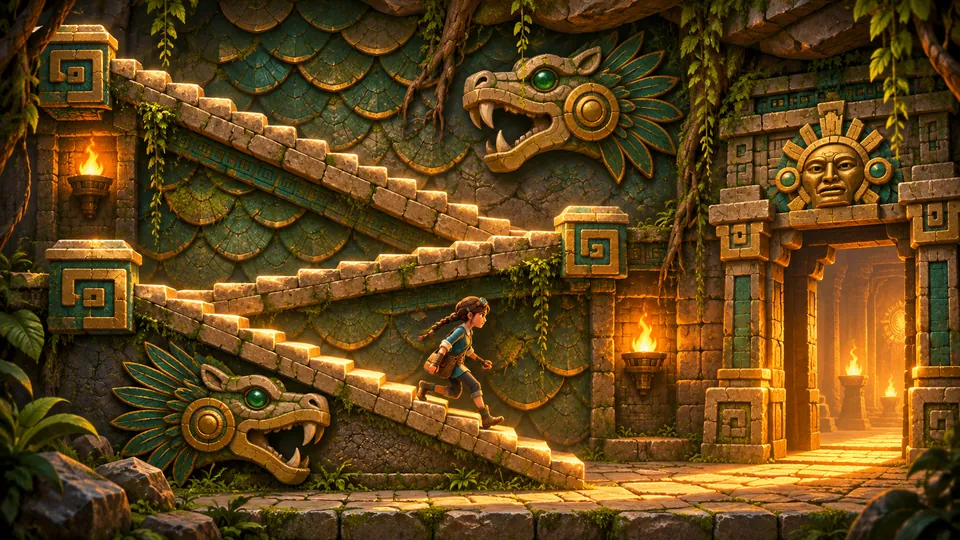
04Hinab zur Schwelle
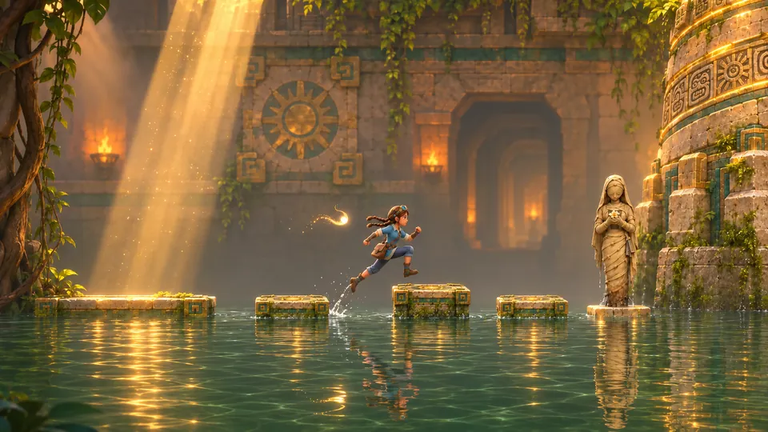
05Das geflutete Atrium
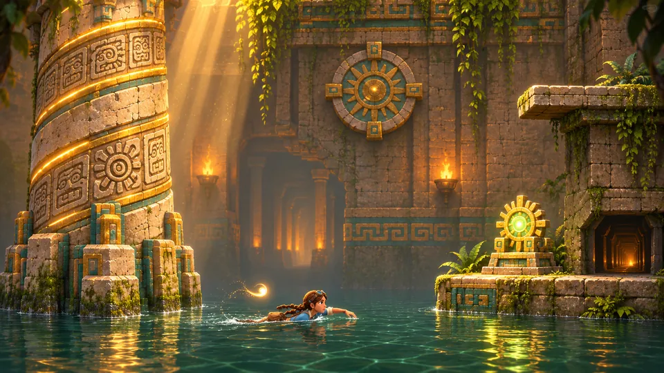
06Die Sonnensäule
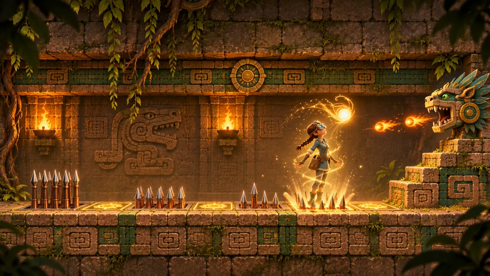
07Der Stachelgang
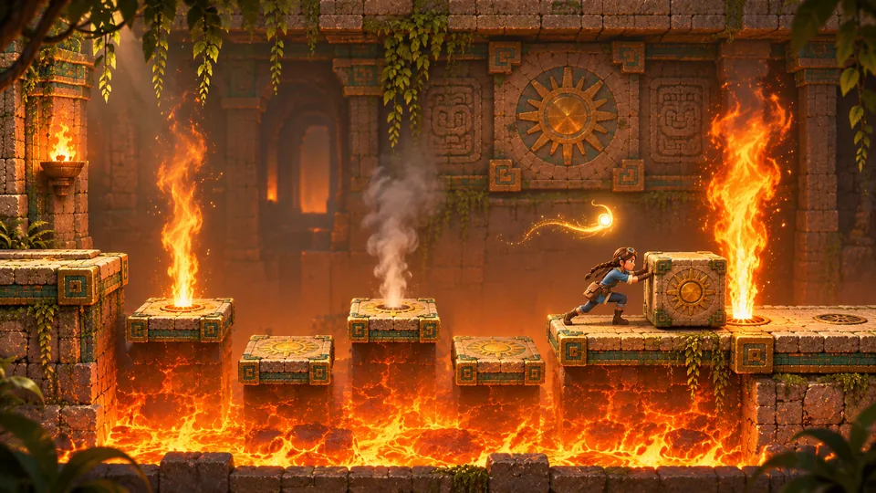
08Die Feuergalerie
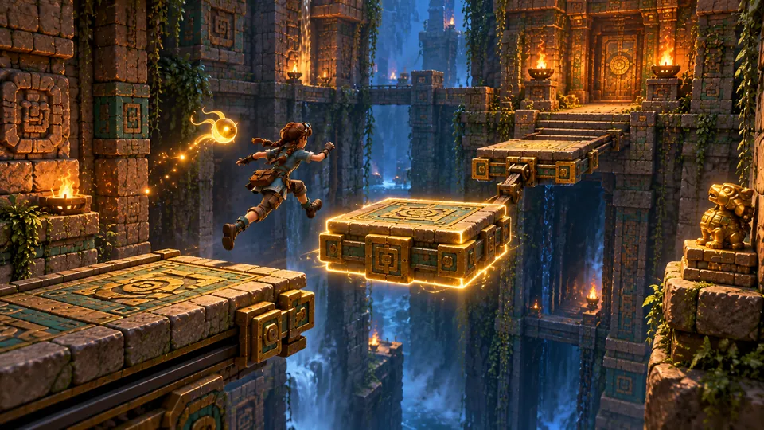
09Der Rand der Schlucht
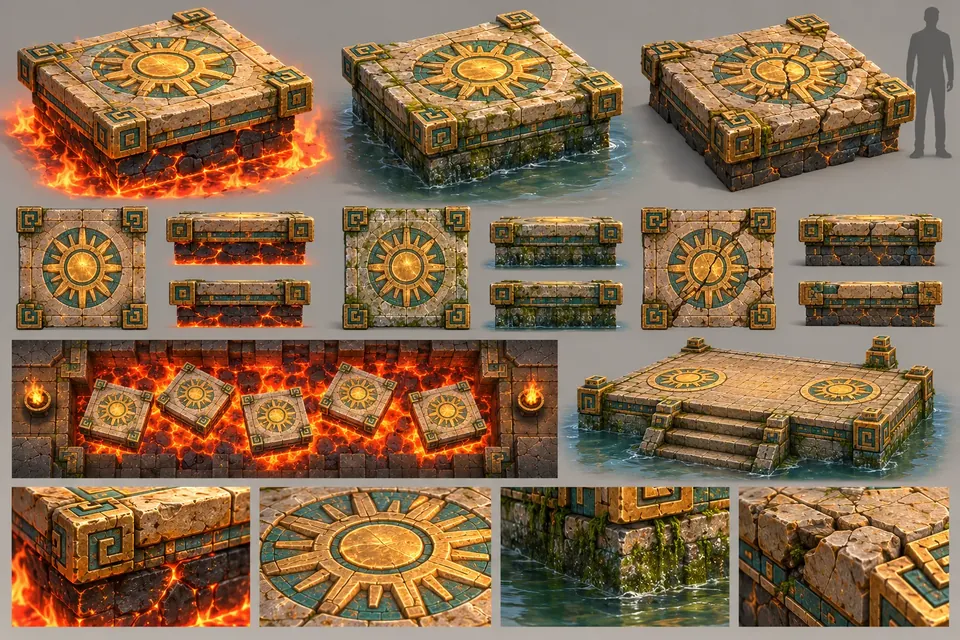
10Die andere Seite
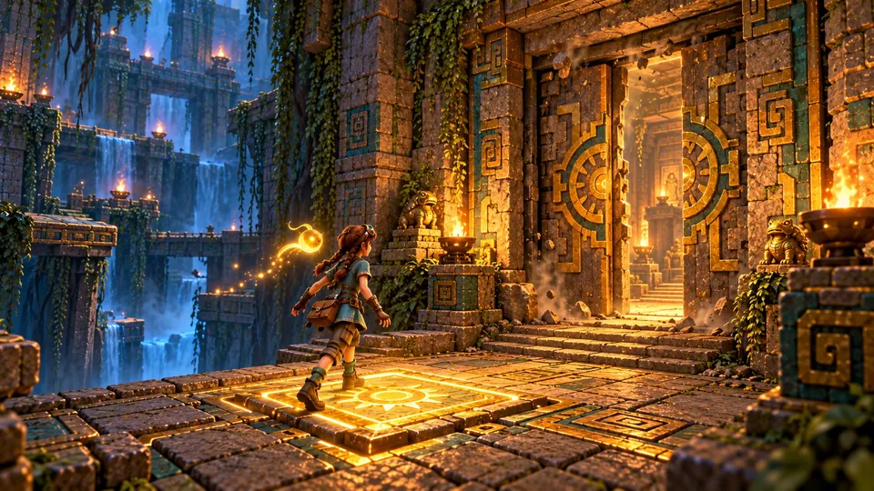
11Die Plattentür und der Aufstieg

12Der Kugelschrein
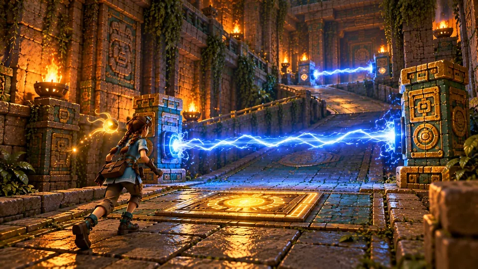
13Die Strahlentreppe
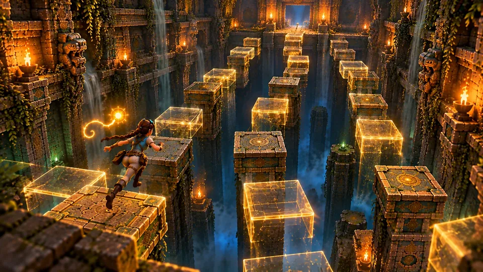
14Die Strahlentreppe, oben

15Der Schwertschrein
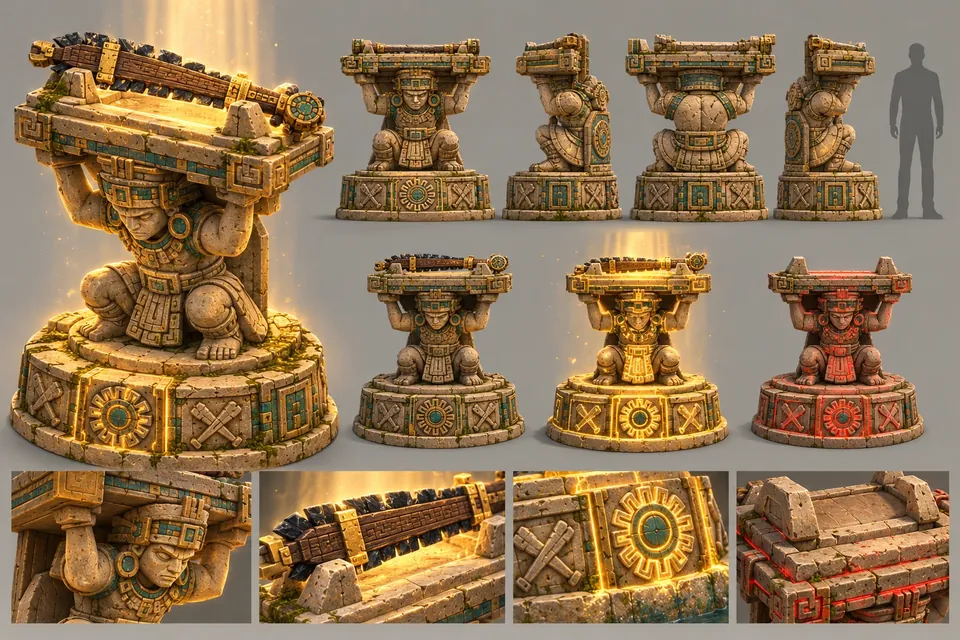
16Der Wurzelvorhang und die zerbrochene Brücke

17Das Portal auf der Sonnensäule
In der Reihenfolge, in der du sie betrittst, vom gefluteten Atrium bis zum Portal auf der Sonnensäule.

Eine Startplattform, Steininseln in knietiefem Wasser und ein Becken zum Schwimmen. Das Portal leuchtet hoch über dir auf der Spitze der Sonnensäule, also ist das Ziel der Ebene von der ersten Sekunde an zu sehen. Zwei Dinge hier sind vorerst außer Reichweite: ein Glyphenziel hoch über dem Becken und ein Sims, zu hoch zum Klettern.
Auf einer halb überfluteten Stufe ruht Ix Nicte, die Hüterin der ersten Stufe. In ihrer Nähe wird K'in still.
Der erste Sonnenschrein steht an seiner Tür. Drinnen ein niedriger Gang: drei Stachelleisten in verschiedenen Takten und eine steinerne Schlange, die vom anderen Ende Feuer speit. Die Linse zeigt, welche Platten sicher sind.
Die letzte Platte tötet dich, wie sie Kaya in der Kurzgeschichte tötet. Das soll so sein. Du erwachst an der Schwelle, Oxlahun gießt Tee ein, und an der Wand ist ein neues Gesicht. Wenn du zurückkommst, hat sich der Tempel bewegt: Die Tür am Ende ist zu einem niedrigen Schlitz geworden, und du rollst hindurch.
Fünf Trittsteine über einer Grube voller Flammen, mit Düsen, die im Zwei-Sekunden-Takt feuern. Ein Block, eine Regel: Schieb ihn in die Öffnung einer Düse, und diese Düse bleibt für immer zu.
Eine ruhende Platte, eine gleitende, eine steigende und eine Fähre, über einem Sturz ins Dunkel. Auf einem Wandsims wartet ein goldenes Idol. Ein Sturz kostet etwas Gesundheit und setzt dich auf die Plattform zurück, von der du kamst.
Trag einen Steinblock auf die Platte, und die Tür bleibt offen. Ein zweiter Sonnenschrein. Hinter der Tür steigt ein Schacht vier Stockwerke über Simse hinauf, und oben lässt sich eine Leiter hinuntertreten: die erste Abkürzung der Ebene.
Drei Sockel, gold, blau und rot. Sonne in Wasser gegossen ergibt Wachstum; Feuer ist die Falle. Wachstum in der Fassung schickt eine Ranke über den Boden, die den Weg weiter aufsprengt.
Zwei Rampen steigen nach links zurück, jede von einem blauweißen Strahl gekreuzt: einen schaltet eine Platte ab, einer läuft im Zwei-Sekunden-Takt. Hier wird nichts ausgewichen. Hier wird gegangen, in der richtigen Hälfte des Takts.
Ein hoher Absatz über dem Atrium. Kaya hebt das Obsidian-Macuahuitl, und der erste Erweckte Wächter tritt aus seiner Nische: die Kombo, der schwere Schlag, die Rolle und die Parade, wenn sein Zeichen golden glüht. Dann zwei weitere Erweckte und ein Novize.
Zwei Hiebe durchtrennen den Wurzelvorhang: das erste Schloss, das die neue Klinge öffnet. Eine Brücke führt zurück über das Atrium, in der Mitte zerbrochen, wo Stachelurnen auf Pfosten stehen. Schlag von oben auf sie, und sie werfen dich weiter. Auf der Sonnensäule: das Portal, ein dritter Schrein und eine Rankenleiter hinunter zum Anfang.
Dann nach Hause zur Schwelle. Oxlahuns Tisch öffnet sich, das Erinnerungsrad leuchtet auf, und das mittlere Portal führt hinauf in die überfluteten Fundamente.